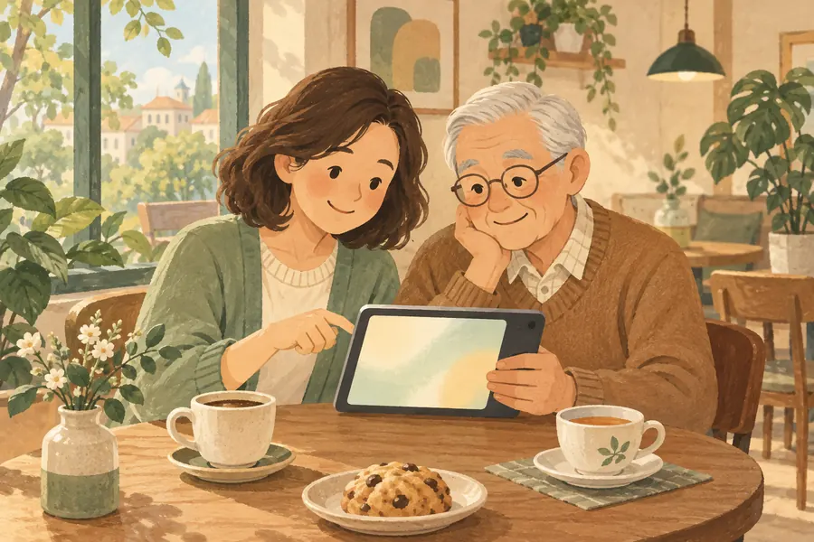

からだや健康について知りたい
日常の疑問や病気の理解に。検索画面の「一般の方・ご家族」を選ぶと、対象読者に合ったコンテンツを探せます。
一般の方向けを探す 症状を整理するセルフチェッカーWELCOME TO ICHISOUZO LAB
医知創造ラボは、脳神経内科専門医が最新のAIで医療と健康の情報を整理して発信するラボです。記事・図解・動画・スライド・ツールから、仕事にも暮らしにも役立つ知識を探せます。まずは目的と読み方を選んでみてください。
知りたいことを探すSTART WITH YOUR PURPOSE

日常の疑問や病気の理解に。検索画面の「一般の方・ご家族」を選ぶと、対象読者に合ったコンテンツを探せます。
一般の方向けを探す 症状を整理するセルフチェッカー病名・薬・検査などから検索し、「医療従事者・研修医」で絞り込めます。詳しい根拠は記事の本文と参考文献をご確認ください。
医療従事者向けを探す 鑑別診断・計算の支援ツールREAD, WATCH, USE
同じテーマのカードにある形式のリンクから選べます。すべてのテーマに、すべての形式があるわけではありません。
FIND YOUR NEXT QUESTION
検索欄に病名・症状・薬・検査などを入力します。見つからないときは短いキーワードに変えるか、読者・形式の絞り込みを解除してください。
「第1回から読む」から始め、カードの次回リンクで読み進められます。ひとつのテーマを続けて学びたいときに。
形式のリンク横にあるしおりボタンで保存し、トップページ右上の「あとで読む」から開けます。検索条件も「検索条件を共有」でリンクをコピーできます。
HOW WE EDIT
AIを文章・図表・音声などの制作に活用し、医学的な確認と公開の判断は専門医が担います。出典の確認や編集の方針は、監修者紹介・編集方針に掲載しています。
監修者紹介・編集方針を読む「あとで読む」と、このトップページから開いたコンテンツの履歴は、お使いのブラウザーに保存されます。ログインは不要で、ほかの端末やブラウザーとの同期はありません。ブラウザーのデータを消去すると、保存した内容も消えます。履歴は「あとで読む」内の「最近見たもの」から消去できます。
表示テーマの設定もブラウザーに保存されます。ブラウザーの設定によって保存できない場合があります。